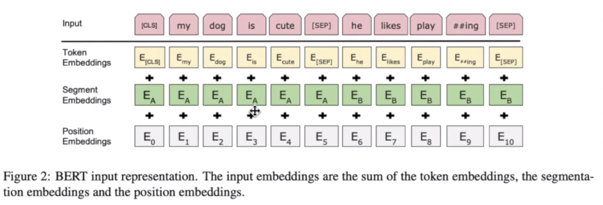
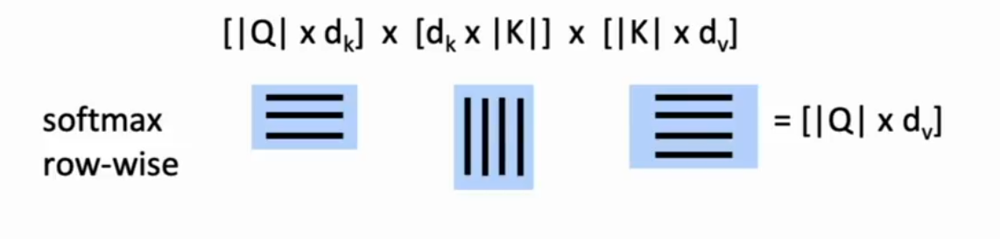
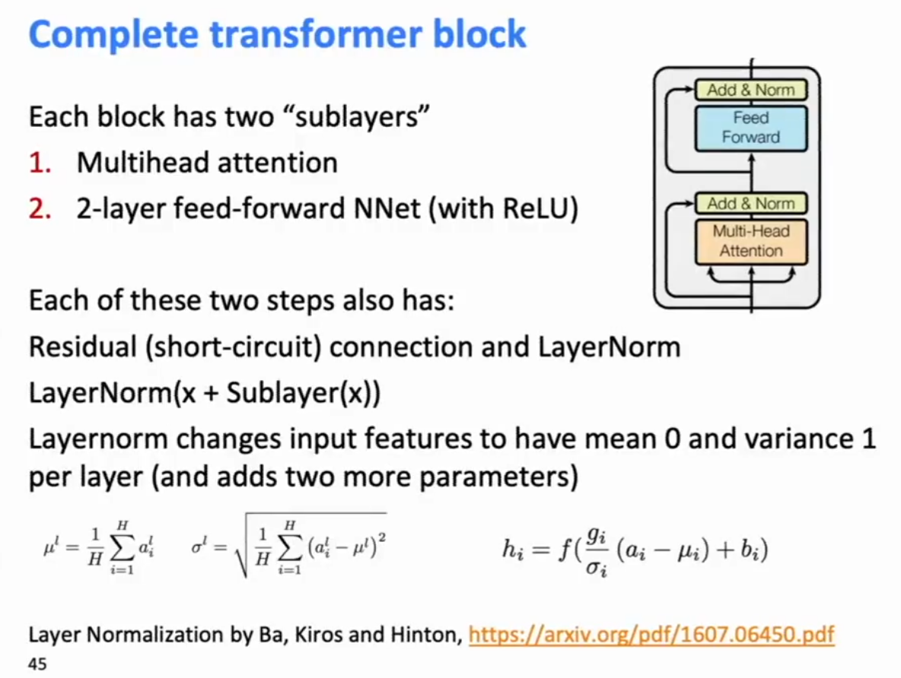
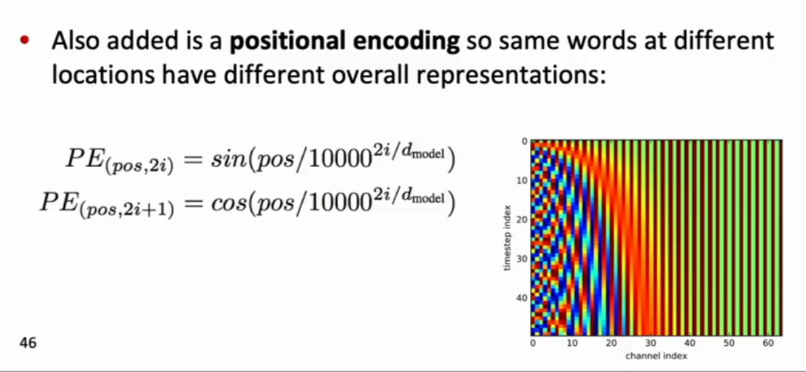
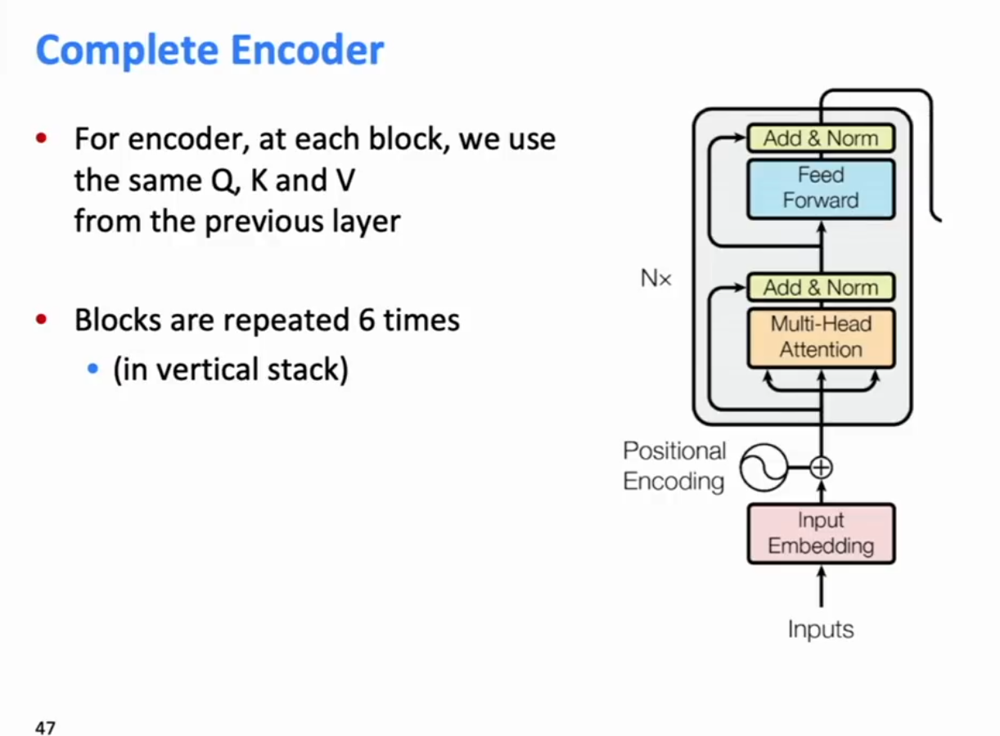
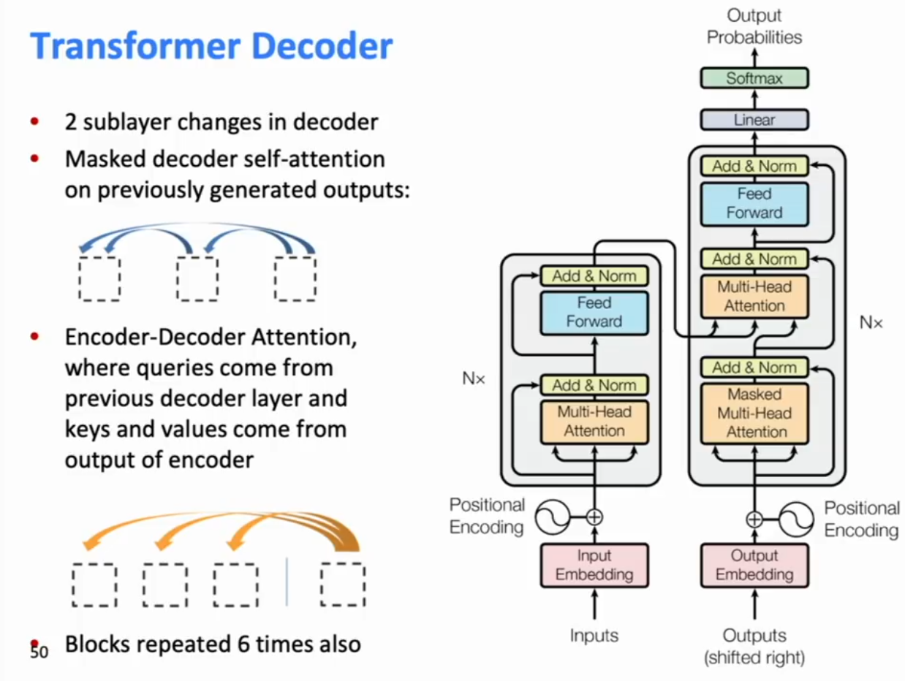
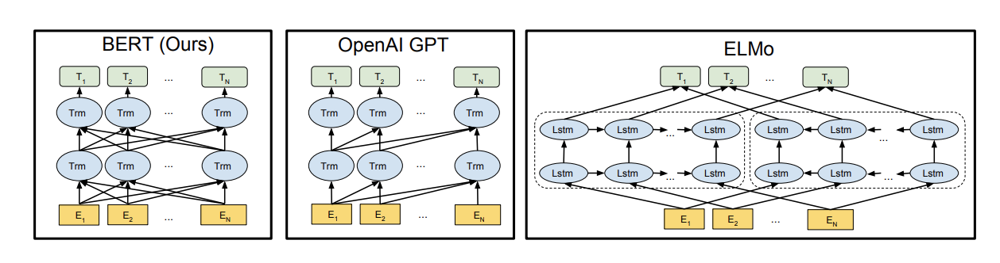
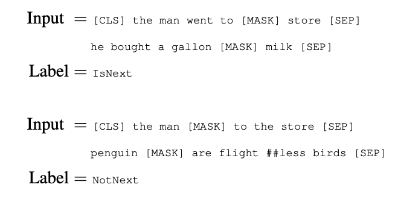
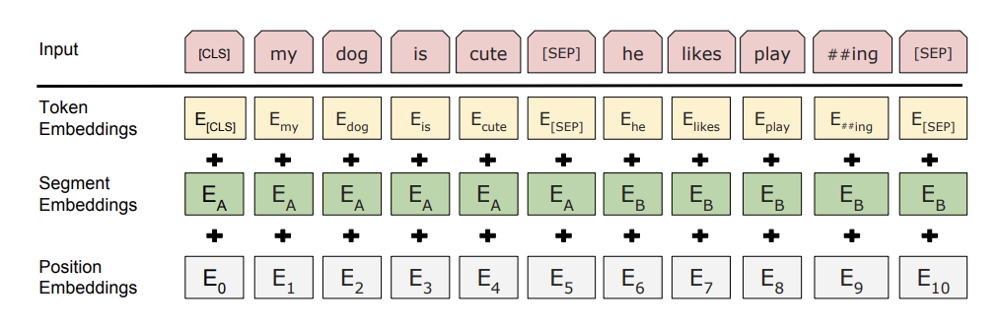
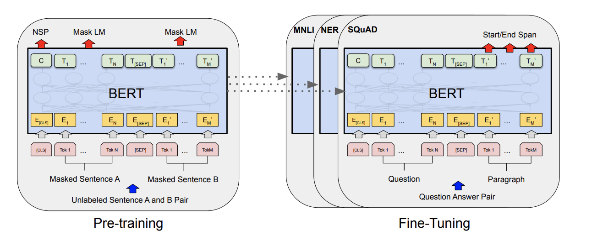

Updated as of Aug 2020.
The Illustrated BERT
BERT model uses a transformer encoder stack to perform language modeling. It is exactly the same as the “Attention is All You Need” transformer, only with some dimentionalities increased. The dimensions of BERT below.
(N, H, K) = (Num Attention Blocks, H=Hidden Dim Size, K=Num Heads in Multi-Head)
BERT BASE - (N=12, H=768, K=12)
BERT LARGE - (N=12, H=768, K=12)
BERT trained on 2.5Billion words from Eng Wikipedia, and 0.5B words from BookCorpus. (Biggest chatbot in 2019- MEENA is trained on 40Billion words).
Basically BERT wants to use a transformer stack and get word embeddings.
GPT-1 already did this, using the Transformer-decoder, but since it used masked-self attention we only got encodings from the forward direction. But we want to do it Bi-directionally, and without the word indirectly peeking at it itself. BERT accomplishes this using the Masked LM objective.

1. Masked Language Modeling - Masking Strategy
For every training sentence, pick any word from the sentence.
[MASK] token[MASK] may no longer appear and this may throw off BERT.2. Sentence Alignment
Does sentence B follow sentence A?
So the BERT input is formatted something like
[CLS] My dog is cute [SEP] He likes play ##ing [SEP]
Given on Huggingface website
ROBERTA - BERT with pretraining subtricks.
DistilBERT - A Smaller version of BERT
XLM - BERT but trained on different langauges.
ELECTRA - BERT with some GAN elements
Longformer - BERT but with efficient local attention
GAN-BERT - BERT with a GAN, uses less annotated data
BART - BERT but sequence to sequence (with a decoder). MBART is a variant trained on more languages.
Pegasus - same as BART but with pretraining tricks
T5 - Original Transformer model (lower dimensionality than BERT) but with "Mode hints" to tell the transformer what to do ("Summarize: ", "Question: ", etc)
(BERT also covered in a bit more detail below)
GPT is essentially the Transformer-Decoder block, AKA, BERT with a masked self-attention in each layer. The original transformer decoder block differed from the encoder block in two ways
GPT-2 is essentially the same model as GPT but GPT-2 is trained on 10x more data. GPT-2 has 1.5B parameters.
Like BERT, all GPT models can perform zero-shot learning/task-transfer.
Additionally, when generating text GPT-2 does not recreate the self-attention key and value vectors for past tokens, since they can no longer change. So it caches them for faster ourput.
That is, if inputs and the hidden layers states of the bi-LSTM layers
Use of ELMO with a Task
Inputs: A query
Ourput is weighted sum of values, where the weight of each value is computed by a dot product of query and corresopnding key, and looking up the weighting for each corresponding value. Queries and keys have the same dimensionality

The attention score is the weighted sum of the values weighted by the attention score, which squashes all the individula reprenstations into one. Scaled Dot-Product Attention
Problem: As
Solution: Scale by length of query/key vectors.
Self-Attention in the Encoder
In the encoder, everything in the attention input is our word vectors: the queries, keys and values are all our word vectors. In other words, the word vectors themselves select each other.
We’ll see in the decoder why we separate them in the definition.
Multi-head Attention
Problem with simple self-attention: Only one way for words to interact with one another. Maybe we wnat multiple types of attention, some to capture syntax, some semantics, some other dependencies.
Solution: Multi-head attention
First map Q, K, V into h=8 many lower dimensional spaces via W matrices. Then apply attention, then concatenate ourputs and pipe through linear layer.

There’s no free lunch. You now no longer have recurrent informaiton carried along a sequence. You’ve got a word at some position which can be casting attention on other words, so if you like to have information carried along the chain, you ahve to walk the first step of the chain, and then you need to have another lauer that walks another step of the chain. So you’re getting rid of the recurrence but you’re substituting some depth to allow thigns to walk along multiple hops. But nevertheless, that is highly advantageous in GPU architectures which can compute everything at once.
Positional Encoding
Note that their actual word representaitons are byte-pair encodings.

Complete Transformer Encoder

Interpretation: At each stage you can look with multi-headed attention at various places in the sentence, accumulate information, push it up to the next layer, and if you do that 6 times, you can be starting to progressively push information along the sequence in either direction to calculate values that are of interest.
The attention heads attend to each other in interprable ways, and can correspond to modifiers of the word, close by words, or anaphora resolution.
Transformer Decoder

Decoderat level n is attending to the encoder hidden state at level n (or the top level of the encoder?), not to itself (the decoder module is not using self-attention)
BERT: Bidirectional ENcoder Representaitons from Transformers 2018.
Devlin, Chang, Lee Toutanova 2018.
Pre-training of Deep Birectional Transformers for Language Understanding
Uses an encoder for a transformer network to calculate a representation of a sentence, to use as an all-purpose representation of a sentence for all tasks.
Problem: Langage models only use left or right context, but languge understanding is bi-drectional.
Why are LMs unidirectional?

How do you get bi-directional context without words being able to see themselves?
Solution: Train things with a Transformer Encoder, and then train on a language model-like objective: no longer predicting the next word moving left to right, but “fill-in-the-blank”:
Mask out k% (k=15%) of the input words, and then predict the masked words.
the man went to the [MASK]{store} to buy a [MASK]{gallon} of milk
Masking is a tradeoff. Too little masking: Too expensive to train. Too much masking: Not enough context.
They argue that OpenAI’s GPT is a classic langauge model working left to right, so you only get left context, for the ELMO langauge model, it’s two separate langauge models: a right-to-left language model and a left-to-right language model, but BERT jointly uses context from both sides at all times.
BERT Complication: Next Sentence Prediction:
(Less Improtant) BERT wanted to make their language model coherent across sentences and able to preserve meaning from sentence to sentence. This makes it useful for QA systems and other systems that ask about meaning over sentences (and not just whether the right words probabilistically follow the ones around it), so in addition to their fill-in-the-blank loss funciton they also had a secondary loss function who’s purpose was to learn relationships between sentences.
Given two sentences, predict whether Sentence B is actual sentence that proceeds Sentence A or a random sentence. ALso train a loss based on the next sentence prediction task.

What did BERT use for embedding?
BERT used a standard token embedding over BPE tokens (as in other langauge models) plus (not concatenate!) a position embedding (as in other position embeddings) plus segment embeddings telling whether the word appears in teh first sentence or the second sentence.
These three things added togehter become the token representations for each pair of sentences. These are put into a transformer model where you have losses when you cannot predict the masked words or if you misclassify the second sentence as correct or not.

Fine-Tuning Training and then Using BERT in Various Tasks
You can take the BERT language model pre-trained, and you can use it for a large number of different tasks by taking off the top level prediction model, use the hidden state representations of each word in context generated by BERT, and then fine tune it on training data for a particular task.

BERT has performed amazingly on almost all NLP tasks.
(1)
Dealing with <unk>s
a) if the <unk> word at test time appears in your unsupervised word embeddings, just use the vector from your pretrained word embeddings as is at test time.
b) additionally, for other words, just assign them a random vector, adding them to your vocabulary.